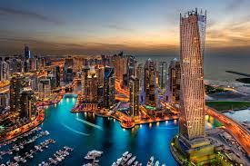
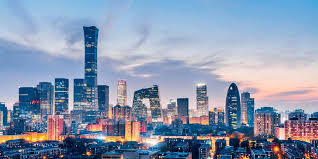

CITYIES TO VISSIT
DUBAI

- key Facts
- It is home to the tallest building the BurjKhalifa the world tallest sky scraper (830)
- It has created the world largest man made island eg, palmJumeriah
- Its of over 80% are expatriates making it a culturl melting pot for over 200 nationalists
- It is a major global hub for business and tourism,famous for its luxury shopping mall
- Its home to the worlds first 3D printed office building
- its official language is arabic but english is commonly spoken
LONDON

- History and governance
- It was founded by the romans aroun 43AD
- It is Englands smallest city
- Landmarks and attractions
- TOWER OF LONDON: home to the Crown jewel and six resident raven
- LONDONS EYE: the world tallest cantilevered observation wheel
- BUCKINHAM PALACE: the rulling monarchs residence
BEIJING

- History and governance
- ANCIENT RUINS: inhabited for thousannd years with human activity dating bact 770,000 years
- CAPITAL STATUS: it has served as chinas capital many times officialy named BEIJING in the 15 thcentury
- GEOGRAPHY
- At the tip of northern china plain, with mountanious areas
- RING STRUCTURE: the city is famously arranged in concentric rings
- DISTRICTS: Comprises of 16 Urburn Suburb and rural DISTRICTS
- CULTURE
- FORBIDEN CITY: a massive palace complex and UNESCO site
- GRAT WALL: Sectiona are accessible near BEIJING a major historical land mmark
- TIANANMEN SQUARE: one of the worlds largest squares central to chinas History
TOKYO

key facts
- POPULATION:over 38 million in the greater tokyo area
- HISTORY: Formaly called Edo became capital in 1868
- CULTURE: features thousands iif shrines,temples,meuseums,and districts for anime
- CUISINE:Has the most Michelin starred resturants globally
- SAFTEY: ranked as one of most safest large cities in the world
INTERESTING DETAILS
- CHERRY BLOSSOMS: a significant cultural heritage
- TAX-FREE SHOPPING: popular for touristys especially in Ginza
- TRAIN PUSHER:staff are employed to push people onto crowded trains during rush hour
NEW YORK

NEW YORK SATE FACTS
- NICK NAME: the empire state
- STATE HOOD: 11 thstate, admitted july 26 th1788
- POPULATION: over 20 million (4 th mosth populous in the U.S.)
NEW YORK CITY FACTS
- LINGUISTIC DIVERSITY: most linguistically diverse city globally with over 800 languages spoken
- HISTORY: Originally Amsterdam a dutch colony renamed after the duke of York
- IMMIGRATION HUB:37% of residents are FOreign-born
- FIRST CSAPITAL: served as the first U.S. capital from 1785-1790
- LANSMARKS: home to the statue of liberty and empire state building
- GREEN SPACE: Centrall park is larger than MOnaco
- SUBWAY: a massive24/7 system with over 427 stations